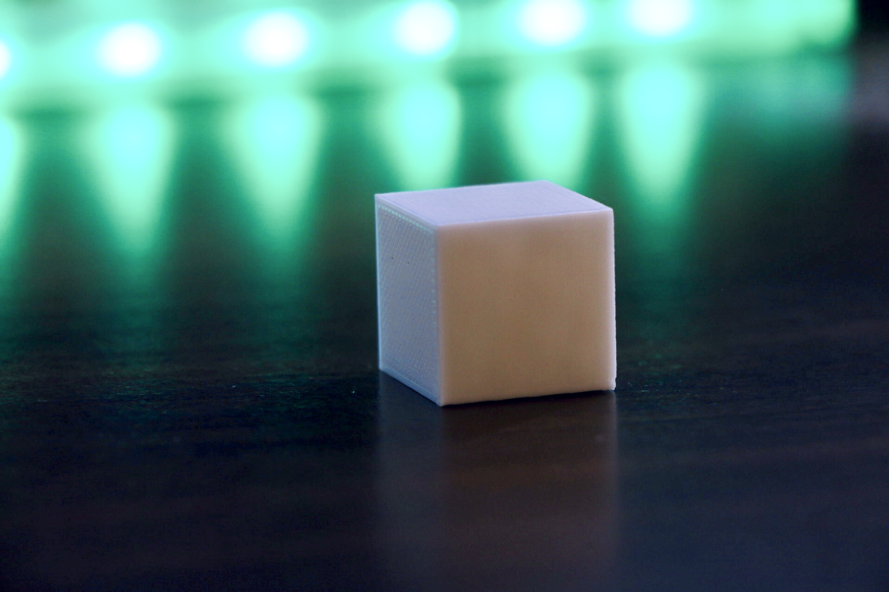
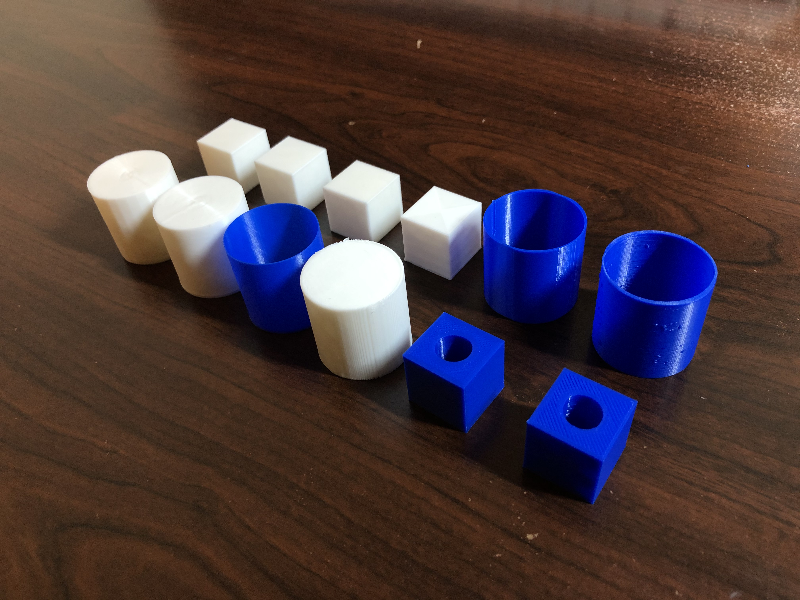

Getting Started With 3D Printing
The Goal
Assemble the 3D printer and get started with a few test prints!
Assembling the 3D Printer
I got the Creality Ender 3 Pro for this class. While setting up the printer, I followed this walkthrough video along with the directions that came with the printer. Assembly took around five hours to complete. While most of the assembly was done alone, there were a few steps of the process where I found another set of hands to be helpful. My build plate was initially really unstable, and I wanted to address that first. I followed several different Youtube videos to figure out how to fix this issue and recruited the help of my brother to hold some pieces in position as I adjusted the eccentric nuts below the build plate. Once the build plate was sturdy, the rest of the assembly was smooth sailing. After checking for loose screws, I made sure that the printer powered on when plugged in, and then I worked on leveling the build plate.
Leveling the Build Plate
I followed this bed leveling protocol on Thingiverse. This video walked me through the protocol. I experienced confusion when my bed leveling process wasn't matching the process shown in the video. I found out that the files referred to in the video were not compatible with the Ender 3 Pro, and that I needed to use the 32-Bit M25 versions of the files provided on Thingiverse. This solved the issue I was experiencing, and I was able to level the bed plate successfully.
Getting Started with Test Prints
Finally, I was able to get started on some test prints! In the table below, I've documented the test prints I did, along with the Cura settings applied, expected printing time, actual time and dimensions, and their STL and G-Code files. Dimensions were measured with calipers.
| Test Print | Cura Settings | Expected Time and Resources | Actual Time and Dimensions | STL and Ender 3 G-Code |
|---|---|---|---|---|
| 2cm Cube with Standard "Low Quality" Settings | Low Quality Setting | 20 min, 4g, 1.36m | 23 min
H 19.94mm W 20.11mm |
cube_2cm.stl
cube_low.gcode |
| 2cm Cube with Standard "Standard Quality" Settings | Standard Quality Setting | 26 min, 4g, 1.36m | 29 min
H 20.02mm W 19.70mm |
cube_2cm.stl
cube_standard.gcode |
| 2cm Cube with Standard "Super Quality" Settings | Super Quality Setting | 49 min, 4g, 1.46m | 51 min
H 19.92mm W 20.00mm |
cube_2cm.stl
cube_high.gcode |
| 2cm Cube with Concentric Top and Bottom Layer and Your Favorite Print Setting | Standard Quality Setting
Concentric Top and Bottom Layer |
25 min, 4g, 1.28m | 27 min
H 19.95mm W 19.68mm |
cube_2cm.stl
cube_concentric.gcode |
| Tube 3cm in Diameter and 3cm High with Single Extrusion Wall Thickness | Standard Quality Setting
0.4mm Wall Thickness |
25 min, 3g, 0.94m | 30 min
H 30.05mm Outer Diameter 30.42mm Inner Diameter 28.56mm |
tube_single.stl
tube_single.gcode |
| Tube 3cm in Diameter and 3cm High with Double Extrusion Wall Thickness and Random Z-Seam Alignment | Standard Quality Setting
0.8mm Wall Thickness Random Z-Seam Alignment |
28 min, 3g, 0.93m | 31 min
H 29.99mm Outer Diameter 29.93mm Inner Diameter 28.37mm |
tube_double.stl
tube_double.gcode |
| Cylinder 3cm in Diameter Exported with a 0.1 Tolerance | Low Quality Setting
Concentric Top and Bottom Pattern 15% Infill |
35 min, 8g, 2.63m | 39 min
H 30.47mm D 30.00mm |
cylinder_1tenthmm_tol.stl
cylinder_1tenthmm_tol.gcode |
| Cylinder 3cm in Diameter Exported with a 0.001 Tolerance | Low Quality Setting
Concentric Top and Bottom Pattern 15% Infill |
36 min, 8g, 2.64m | 40 min
H 29.98mm D 30.07mm |
cylinder_1thousandthmm_tol.stl
cylinder_1thousandthmm_tol.gcode |
| Cylinder 3cm in Diameter with Spiralize Outer Contour | Standard Quality Setting
15% Infill Spiralize Outer Contour |
28 min, 2g, 0.71m | 30 min
H 30.05mm D 30.51mm Wall Thickness 0.45mm |
cylinder_1thousandthmm_tol.stl
cylinder_spiral.gcode |
| Cylinder 3cm in Diameter Printed on Its Side with Supports On | Low Quality Setting
15% Infill Supports Generated |
50 min, 9g, 3.01m | 52 min
H 30.19mm D 30.00mm |
cylinder_1thousandthmm_tol.stl
cylinder_supports.gcode |
| 20.00mm +/- 0.1mm Cube with a 10.00mm +/- 0.1mm Hole Through It | Standard Quality Setting
20% Infill 0.4mm Wall Thickness |
28 min, 3g, 1.02m | 29 min
H 20.03mm D 20.05mm Hole D 10.00mm |
cube_hol.stl
cube_hole_2.gcode |
The final test print took me 2 tries to get to tolerance.
Download all STL and G-Code files on GitHub.